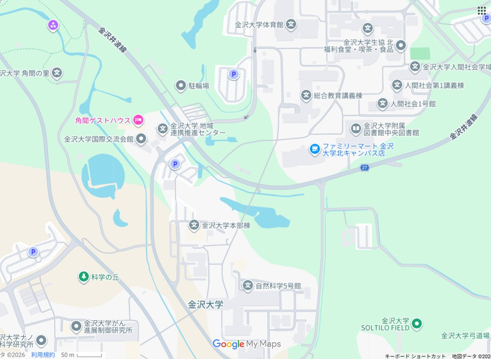

北陸遠征のしおり
🏠
ホーム
👥
メンバー
📍
聖地巡礼マップ
✉️
その他
← 聖地巡礼マップ一覧
『Angel Beats!』
聖地巡礼マップ
📍 石川県金沢市／金沢大学 角間キャンパス
ピンをタップするとスポット詳細に移動します。

1
2
3
4
5
6
7
地図データ ©Google
1
金沢大学標石
2
階段（北地区）
3
アカンサスインターフェイス
4
南アカンサスインターフェイス
5
金沢大学 中央図書館
6
金沢大学 体育館
7
自然科学本館
《Web Design:Template-Party》
🏠
ホーム
👥
メンバー
📍
聖地巡礼マップ
✉️
その他
九州遠征のしおりへ